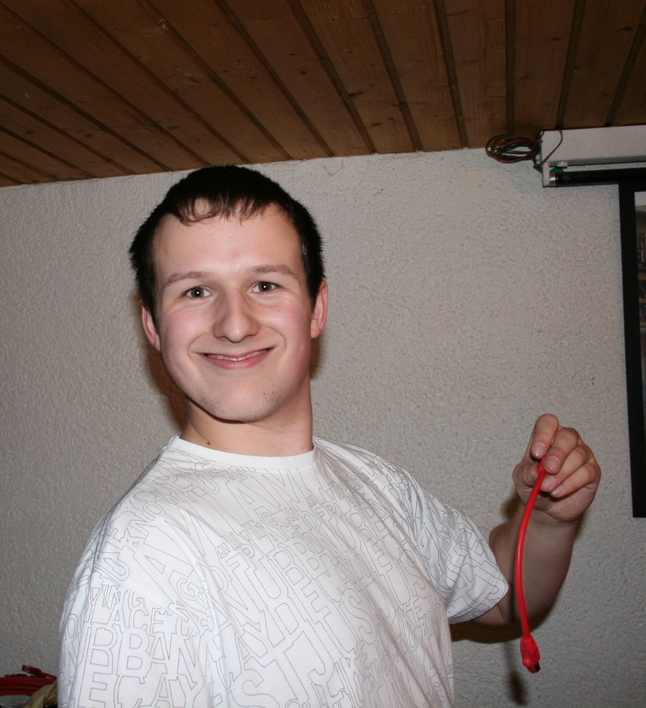

class: center, middle, inverse # Vox Pupuli Community Update <br/> ## 2025 Edition ??? --- ## $ whoami  * Tim 'bastelfreak' Meusel * Puppet Contributor since 2012 * Merging stuff on [Vox Pupuli](https://voxpupuli.org/) (Puppet Community) since 2015 * Vox Pupuli Project Management Committee member * Senior IT Automation Consultant at [betadots](https://betadots.de/) <a href='https://betadots.de' alt='company website betadots'><img src="logo-1181x1181.png" alt="drawing" style="position: fixed; bottom: 12px; left: 20px; width: 100px;"/></a> ??? * Who knows this picture? --- .left-column[ ## Vox Pupuli ### What? ] .right-column[ * Maintain <s>178</s>->188 Puppet modules * And Rubygems! * Be helpful and polite to each other * Be open-minded to people and technology * Provide a home for orphaned Puppet modules * Unite lonely module and tooling authors to a collective * Ensure continued development for our code ] <a href='https://betadots.de' alt='company website betadots'><img src="logo-1181x1181.png" alt="drawing" style="position: fixed; bottom: 12px; left: 20px; width: 100px;"/></a> .footnote[[@bastelsblog](https://twitter.com/bastelsblog) for [@voxpupuliorg](https://twitter.com/voxpupuliorg)] ??? * last year we had 178 modules, now 188 --- .left-column[ ## Vox Pupuli ### What? ] .right-column[ * All major [puppet-lint plugins](https://rubygems.org/gems/voxpupuli-puppet-lint-plugins) (shipped by PDK) * [FacterDB](https://github.com/voxpupuli/facterdb) (shipped by PDK) * [metadata-json-lint](https://github.com/voxpupuli/metadata-json-lint) (shipped by PDK) * [json-schema](https://github.com/voxpupuli/json-schema) (shipped by PDK) * [rspec-puppet-facts](https://github.com/voxpupuli/rspec-puppet-facts) (shipped by PDK) * [puppet-blacksmith](https://github.com/voxpupuli/puppet-blacksmith) (shipped by PDK) * [puppet-syntax](https://github.com/voxpupuli/puppet-syntax) (shipped by puppet-dev-tools container) * [ra10ke](https://github.com/voxpupuli/ra10ke) (shipped by puppet-dev-tools container) * [onceover](https://github.com/voxpupuli/onceover) (shipped by puppet-dev-tools container) * [Beaker](https://github.com/voxpupuli/beaker) (Perforces uses it internally) * [hiera-eyaml](https://github.com/voxpupuli/hiera-eyaml/) (shipped by PE and puppet-dev-tools container) ] <a href='https://betadots.de' alt='company website betadots'><img src="logo-1181x1181.png" alt="drawing" style="position: fixed; bottom: 12px; left: 20px; width: 100px;"/></a> .footnote[[@bastelsblog](https://twitter.com/bastelsblog) for [@voxpupuliorg](https://twitter.com/voxpupuliorg)] ??? * we own the majority of tools for testing in the puppet ecosystem * perforce sells some of it to their customers --- .left-column[ ## Vox Pupuli ### What? ### Who? ] .right-column[ * Amount of Vox Pupuli members with merge permissions * 211 people last year at cfgmgmtcamp, 218 right now!  ] <a href='https://betadots.de' alt='company website betadots'><img src="logo-1181x1181.png" alt="drawing" style="position: fixed; bottom: 12px; left: 20px; width: 100px;"/></a> .footnote[[@bastelsblog](https://twitter.com/bastelsblog) for [@voxpupuliorg](https://twitter.com/voxpupuliorg)] ??? * 161 members in the GitHub org with merge access in 2022, 186 last year, 211 right now. --- .left-column[ ## Vox Pupuli ### What? ### Who? ### $$ ] .right-column[ * For a few years, we explored options to receive fundings * become a legal entity, or join an existing group ] <a href='https://betadots.de' alt='company website betadots'><img src="logo-1181x1181.png" alt="drawing" style="position: fixed; bottom: 12px; left: 20px; width: 100px;"/></a> .footnote[[@bastelsblog](https://twitter.com/bastelsblog) for [@voxpupuliorg](https://twitter.com/voxpupuliorg)] ??? --- .left-column[ ## Vox Pupuli ### What? ### Who? ### $$ ] .right-column[ * For a few years, we explored options to receive fundings * become a legal entity, or join an existing group Existing groups: * [Linux Foundation](https://linuxfoundation.eu/en/projects) * [Software in the Public Interest](https://www.spi-inc.org/) (SPI) * [Open Source Collective](https://oscollective.org/) (OSC) ] <a href='https://betadots.de' alt='company website betadots'><img src="logo-1181x1181.png" alt="drawing" style="position: fixed; bottom: 12px; left: 20px; width: 100px;"/></a> .footnote[[@bastelsblog](https://twitter.com/bastelsblog) for [@voxpupuliorg](https://twitter.com/voxpupuliorg)] ??? * there wasn't a big need to join. Who would fund us? For what would be spend a few dollars? --- .left-column[ ## Vox Pupuli ### What? ### Who? ### $$ ] .right-column[ * November 2021: Perforce announced to sponsor us! https://dev.to/puppet/help-us-understand-how-you-use-open-source-puppet-51aj <blockquote>> For each survey response, Puppet will donate $1 to Vox Pupuli via Software in the Public Interest (SPI). Plus you can opt in to a raffle to win a new Apple Watch Series 7.</blockquote> ] <a href='https://betadots.de' alt='company website betadots'><img src="logo-1181x1181.png" alt="drawing" style="position: fixed; bottom: 12px; left: 20px; width: 100px;"/></a> .footnote[[@bastelsblog](https://twitter.com/bastelsblog) for [@voxpupuliorg](https://twitter.com/voxpupuliorg)] ??? --- .left-column[ ## Vox Pupuli ### What? ### Who? ### $$ ] .right-column[ * Now we had a motivation enable us for funds * We tried to join SPI, but that requires actual paper work * During config management camp 2023, we joined [Open Source collective](https://voxpupuli.org/blog/2023/07/20/voxpupuli-sponsoring/)! ] <a href='https://betadots.de' alt='company website betadots'><img src="logo-1181x1181.png" alt="drawing" style="position: fixed; bottom: 12px; left: 20px; width: 100px;"/></a> .footnote[[@bastelsblog](https://twitter.com/bastelsblog) for [@voxpupuliorg](https://twitter.com/voxpupuliorg)] ??? --- .left-column[ ## Vox Pupuli ### What? ### Who? ### $$ ### 3 year recap ] .right-column[ * received $11,649.78 USD (after fees) ] <a href='https://betadots.de' alt='company website betadots'><img src="logo-1181x1181.png" alt="drawing" style="position: fixed; bottom: 12px; left: 20px; width: 100px;"/></a> .footnote[[@bastelsblog](https://twitter.com/bastelsblog) for [@voxpupuliorg](https://twitter.com/voxpupuliorg)] ??? --- .left-column[ ## Vox Pupuli ### What? ### Who? ### $$ ### 3 year recap ] .right-column[ * Received a single $8,000 USD donation from Microsoft (WTF?! ♥) .evensmaller[] ] <a href='https://betadots.de' alt='company website betadots'><img src="logo-1181x1181.png" alt="drawing" style="position: fixed; bottom: 12px; left: 20px; width: 100px;"/></a> .footnote[[@bastelsblog](https://twitter.com/bastelsblog) for [@voxpupuliorg](https://twitter.com/voxpupuliorg)] ??? --- .left-column[ ## Vox Pupuli ### What? ### Who? ### $$ ### 3 year recap ] .right-column[  * Over the years we purchased 85 finger puppet for ~ 1400€ ] <a href='https://betadots.de' alt='company website betadots'><img src="logo-1181x1181.png" alt="drawing" style="position: fixed; bottom: 12px; left: 20px; width: 100px;"/></a> .footnote[[@bastelsblog](https://twitter.com/bastelsblog) for [@voxpupuliorg](https://twitter.com/voxpupuliorg)] ??? * expensive gifts, but we love to hand them out --- .left-column[ ## Vox Pupuli ### What? ### Who? ### $$ ### 3 year recap ] .right-column[ Services we pay for: * [inwx.de](https://www.inwx.de/en/) for domains * [Hetzner](https://www.hetzner.com/) for DNS services * [tuta.com](https://tuta.com/) shared email accounts ] <a href='https://betadots.de' alt='company website betadots'><img src="logo-1181x1181.png" alt="drawing" style="position: fixed; bottom: 12px; left: 20px; width: 100px;"/></a> .footnote[[@bastelsblog](https://twitter.com/bastelsblog) for [@voxpupuliorg](https://twitter.com/voxpupuliorg)] ??? --- .left-column[ ## Vox Pupuli ### What? ### Who? ### $$ ### 3 year recap ### Sponsors ] .right-column[ * [voxpupuli.org/sponsoring](https://voxpupuli.org/sponsoring/) list of all sponsors that provide us services * GitHub sponsors us 80 concurrent standard runners * Those companies enable us to work more efficient and provide services to our users ] <a href='https://betadots.de' alt='company website betadots'><img src="logo-1181x1181.png" alt="drawing" style="position: fixed; bottom: 12px; left: 20px; width: 100px;"/></a> .footnote[[@bastelsblog](https://twitter.com/bastelsblog) for [@voxpupuliorg](https://twitter.com/voxpupuliorg)] ??? --- .left-column[ ## Vox Pupuli ### What? ### Who? ### $$ ### 3 year recap ### Sponsors ] .right-column[ * [voxpupuli.org/sponsoring](https://voxpupuli.org/sponsoring/) list of all sponsors that provide us services * GitHub sponsors us 80 concurrent standard runners * Those companies enable us to work more efficient and provide services to our users * [puppetmodule.info](https://www.puppetmodule.info/modules) - central place for automatic module documentation * Operated by Vox Pupuli with help from our sponsors ] <a href='https://betadots.de' alt='company website betadots'><img src="logo-1181x1181.png" alt="drawing" style="position: fixed; bottom: 12px; left: 20px; width: 100px;"/></a> .footnote[[@bastelsblog](https://twitter.com/bastelsblog) for [@voxpupuliorg](https://twitter.com/voxpupuliorg)] ??? --- .left-column[ ## Vox Pupuli ### What? ### Who? ### $$ ### 3 year recap ### Sponsors ### CI ] .right-column[ * We could improve DevX with bigger and/or more CI runners * We considered paying for bigger GitHub runners * We experimented with self-hosted runners * GitHub doesn't provide proper CI stats, so you cannot estimate the costs * I wasted 100€ for large GitHub runners, for just one repo, in one day ] <a href='https://betadots.de' alt='company website betadots'><img src="logo-1181x1181.png" alt="drawing" style="position: fixed; bottom: 12px; left: 20px; width: 100px;"/></a> .footnote[[@bastelsblog](https://twitter.com/bastelsblog) for [@voxpupuliorg](https://twitter.com/voxpupuliorg)] ??? --- .left-column[ ## Vox Pupuli ### What? ### Who? ### $$ ### 3 year recap ### Sponsors ### CI ### Future ] .right-column[ * For config management Camp 2025 we reimbursed 4267$ of flight/hotel costs * We want to sponsor more people in the future to attend conferences * We've 5,317$ on our bank accountand 300-400$ monthly income ] <a href='https://betadots.de' alt='company website betadots'><img src="logo-1181x1181.png" alt="drawing" style="position: fixed; bottom: 12px; left: 20px; width: 100px;"/></a> .footnote[[@bastelsblog](https://twitter.com/bastelsblog) for [@voxpupuliorg](https://twitter.com/voxpupuliorg)] ??? --- .left-column[ ## Vox Pupuli ### What? ### Who? ### $$ ### 3 year recap ### Sponsors ### CI ### Future ] .right-column[ * So far Puppet/Perforce didn't sponsor a single penny ] <a href='https://betadots.de' alt='company website betadots'><img src="logo-1181x1181.png" alt="drawing" style="position: fixed; bottom: 12px; left: 20px; width: 100px;"/></a> .footnote[[@bastelsblog](https://twitter.com/bastelsblog) for [@voxpupuliorg](https://twitter.com/voxpupuliorg)] ??? --- .left-column[ ## Vox Pupuli ### What? ### Who? ### $$ ### 3 year recap ### Sponsors ### CI ### Future ### Contribute?! ] .right-column[ * Please support us with donations! * [github.com/sponsors/voxpupuli](https://github.com/sponsors/voxpupuli) * [opencollective.com/vox-pupuli](https://opencollective.com/vox-pupuli) * Please contribute to the ecosystem! ] <a href='https://betadots.de' alt='company website betadots'><img src="logo-1181x1181.png" alt="drawing" style="position: fixed; bottom: 12px; left: 20px; width: 100px;"/></a> .footnote[[@bastelsblog](https://twitter.com/bastelsblog) for [@voxpupuliorg](https://twitter.com/voxpupuliorg)] ??? --- .left-column[ ## Vox Pupuli ### What? ### Who? ### $$ ### 3 year recap ### Sponsors ### CI ### Future ### Contribute?! ] .right-column[ * Please support us with donations! * [github.com/sponsors/voxpupuli](https://github.com/sponsors/voxpupuli) * [opencollective.com/vox-pupuli](https://opencollective.com/vox-pupuli) * Please contribute to the ecosystem! * Check open PRs/Issues at [github.com/voxpupuli](https://github.com/voxpupuli) * Come to `#voxpupuli` on Libera.Chat IRC * Or `#voxpupuli` on [voxpupuli.slack.com](https://short.voxpupu.li/puppetcommunity_slack_signup) * Come to the Puppet rooms B.2.011 / B.2.015 ### Thanks for your attention! ] <a href='https://betadots.de' alt='company website betadots'><img src="logo-1181x1181.png" alt="drawing" style="position: fixed; bottom: 12px; left: 20px; width: 100px;"/></a> .footnote[[@bastelsblog](https://twitter.com/bastelsblog) for [@voxpupuliorg](https://twitter.com/voxpupuliorg)] ???